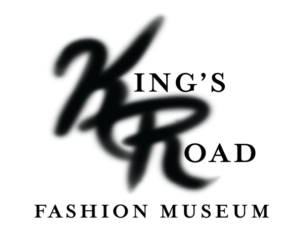
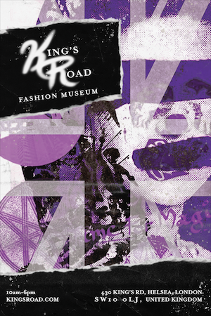
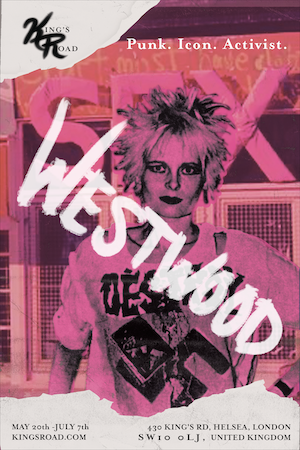
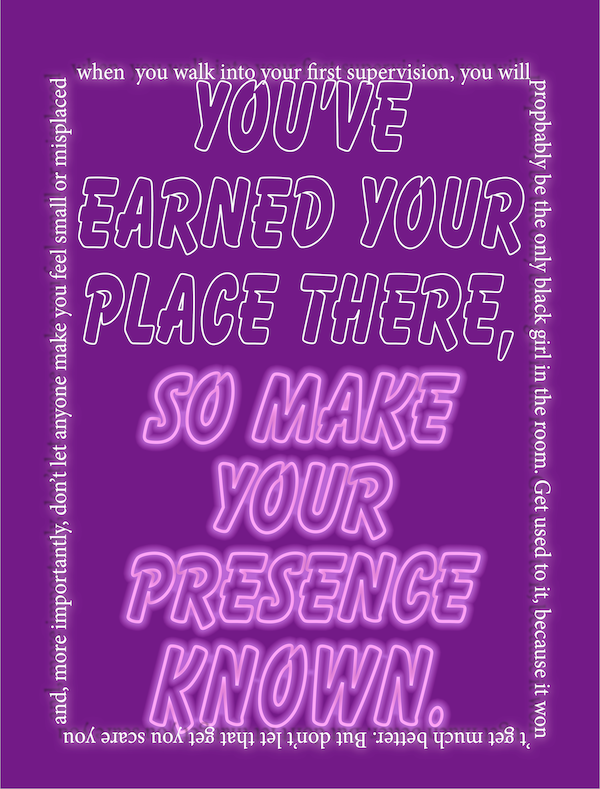
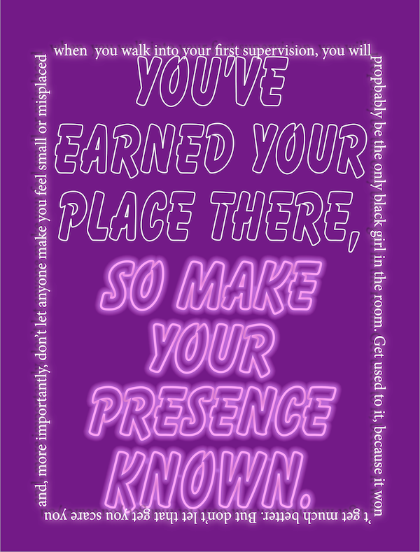

Museum Design
Type Design 2021.
For this project we were tasked with developing branding for a museum concept of our choice. The project consists of creating a logo, 2 posters; a main museum and an event poster, and a website mockup. I choose to make a museum that commemorates some of London’s icons fashion designers that emerged from King’s Road.







 
